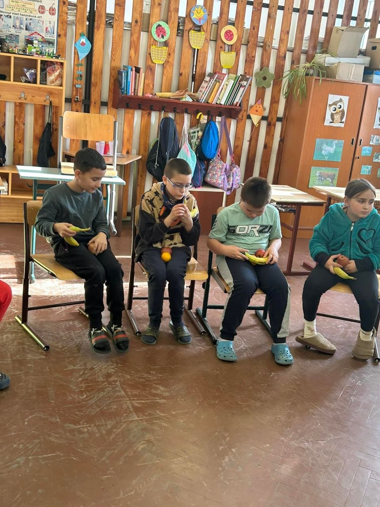

Sztojka Edina története
Sztojka Edina Aranypánt-díjas, diplomás ápolónő, aki saját életútján keresztül bizonyította, hogy a legnehezebb körülményekből is lehet jövőt építeni.
Az alapítványt azért hozta létre, hogy a gyermekek esélyt kapjanak egy jobb életre.